修复前补核本轮原346图未单独呈现的本机关键状态。22项MAPPED，2项force下层隔离FAIL明确保留，正在修复；取证完成不等于视觉验收完成。这不是新原图或未经裁剪全产品1:1。原346图和源码归属保持不变。
demo-restore-dense-bottom · 1440×900
MAPPED — 仅映射proxy-bound列表容器，没有同名原演示恢复底部图。1040×592、x200/y162，正文494/494/0、表体230/756/526均到底；第12项及原seed保留/凭据重填完整可见，footer y696/h58的取消/下一步未遮末行。保留演示JSON非完整本机恢复说明，未提交恢复。
同类原容器：proxy-bound；本机状态适配不冒称同名原执行。
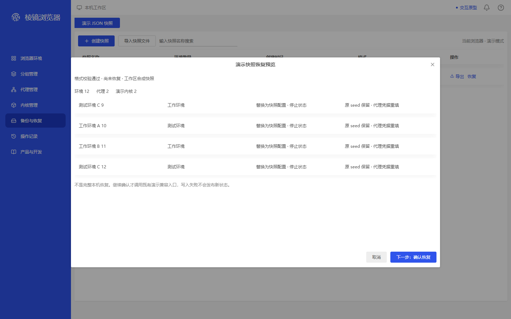
af4eccf11af34bb62513d48a2de504f7e46c93c3be578a4d961b6a995e2c05c1
native-restore-dense-top · 1440×900
MAPPED — 仅映射proxy-bound容器，非原26项预检。1040×592、x200/y162，第一页25项，截图呈现前3项；表体230/1510/0、正文494/514/0，不能当末项或正文到底证据。新增25/覆盖1、1–25/26及身份保护可读；footer y696/h58可达，正文尚有20px滚动余量，未提交恢复。
同类原容器：proxy-bound；本机状态适配不冒称同名原执行。
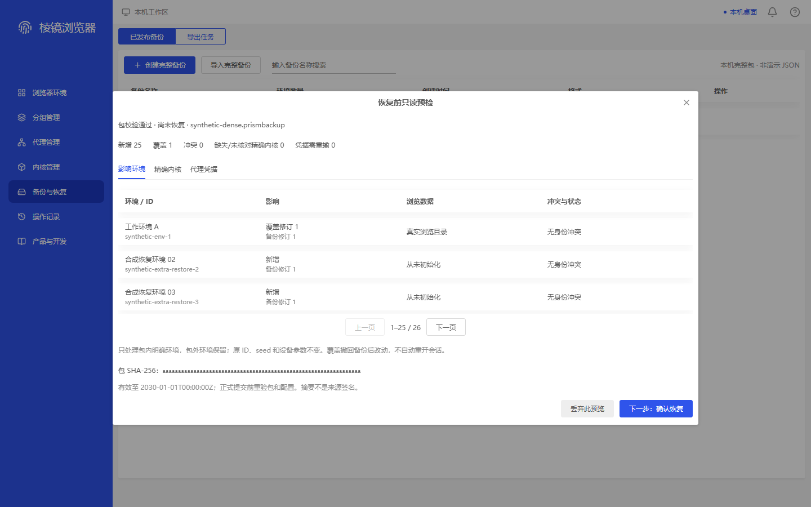
e5b14fc6bc8cf310bfed085d9d58eadd7e65d74cb259a896eff50562de857944
native-restore-dense-bottom · 1440×900
MAPPED — 仅映射proxy-bound容器。1040×592、x200/y162，表体230/1510/1280、正文494/514/20均滚底差0；第一页第25项及有效期/提交前重验说明完整可见，仍为1–25/26，不能代替第26项。固定footer y696/h58无覆盖末行，顶部包说明随正文滚动出现边缘裁切属于底部位置，未提交恢复。
同类原容器：proxy-bound；本机状态适配不冒称同名原执行。

feeb2a5bc367128049ac6c8d23a8be2de9384819c6485f46efe6888ddac1b3f6
native-restore-dense-page-two · 1440×900
MAPPED — 仅映射proxy-bound容器，没有同名原预检第二页。1040×592、x200/y162，服务读取offset0/25；第二页只有合成恢复环境26，标示26–26/26，上页可用/下页禁用。表体118/118/0、正文494/494/0；身份/包摘要和footer y696/h58完整，真实恢复未提交。
同类原容器：proxy-bound；本机状态适配不冒称同名原执行。

41557605a872a331abf665c23f2d435cf3ff127e710ef4329727d4827ac4b77e
native-restore-dense-page-error · 1440×900
MAPPED — 仅映射proxy-bound容器，无同名原读取失败图。第二页读取失败后显示错误占位行而非第26项；STORAGE_READ_FAILED与重新读取影响清单可见。1040×592、x200/y162，正文494/494/0，footer y696/h58的下一步禁用、丢弃可见；保留原输入/不提交恢复，未实际点击重读。
同类原容器：proxy-bound；本机状态适配不冒称同名原执行。
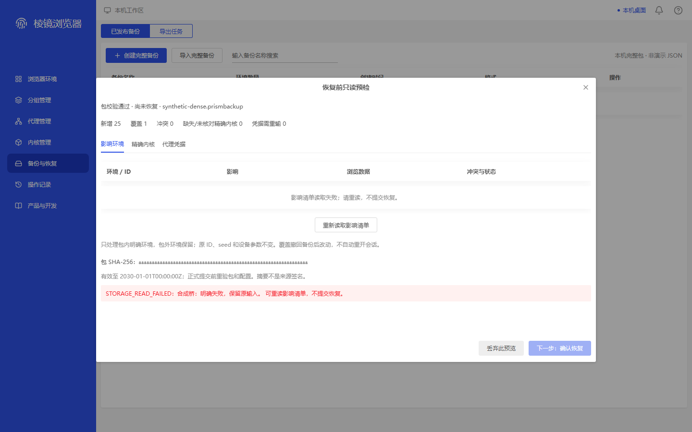
376b43de16bf4f55180cd70a111c6ec7aa54b9d3ce2b64834c14e597d062fa40
native-diagnostics-minimal-bottom · 1440×900
MAPPED — 仅映射proxy-edit的620px详情容器，无同名原最小诊断。620×580、x410/y168，正文482/516/34确实到底；最小报告/启动读取错误及最后有效期说明可见。顶部排除说明随内部滚动部分离开视区，footer y690/h58的返回/保存完整；122层单0.4遮罩，未保存真实文件。
同类原容器：proxy-edit；本机状态适配不冒称同名原执行。
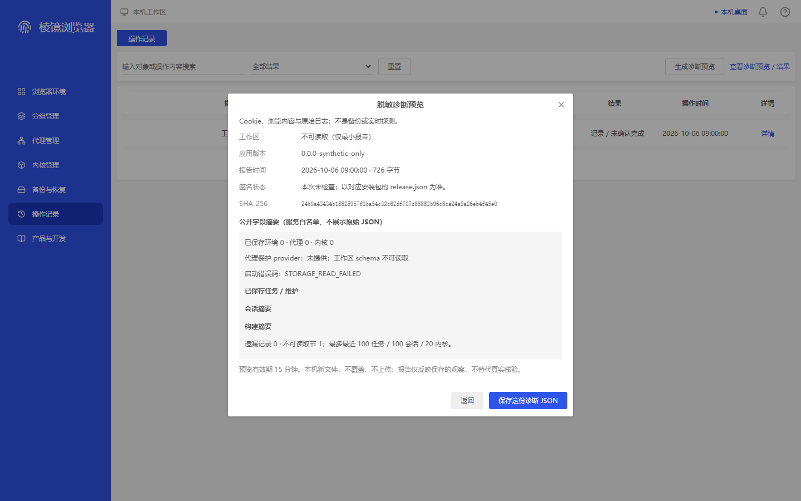
a5840d237f445993e339ebacc301d679f97f0aa44cc86349b0fd67f72471b7da
workspace-fault-diagnostic-bottom · 1440×900
MAPPED — 仅映射proxy-edit的620px详情容器，无同名原故障诊断。620×580、x410/y168，正文482/488/6滚底差0，最后说明真实可见；footer y690/h58的返回/保存与关闭可达。低层blocker160为inert/透明遮罩，最高162唯一0.4遮罩，未执行真实诊断或文件保存。
同类原容器：proxy-edit；本机状态适配不冒称同名原执行。
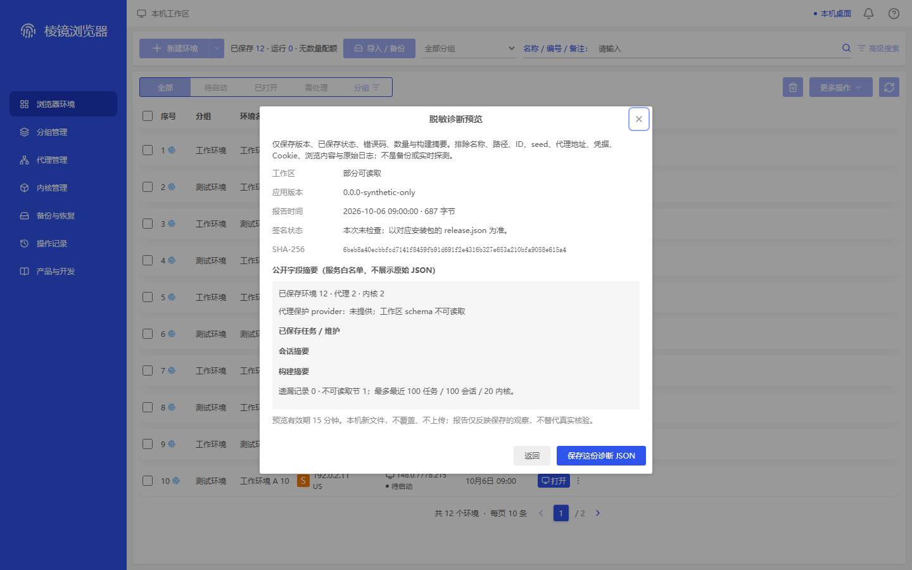
6aaf302b591acad2210e5d66f85fe24f6cd02b5cc5643cd10ae73cc1d4f35a26
workspace-cookie-fault-diagnostic-bottom · 1440×900
MAPPED — 仅映射proxy-edit详情容器，无同名原Cookie嵌套诊断。最高620×580、x410/y168，正文482/488/6到底、footer y690/h58完整；Cookie80/blocker160均inert且透明mask，162唯一0.4遮罩。下层输入仍遮蔽，脚本记录原合成输入保留；通知y40/h48未遮诊断，未写Cookie或保存文件。
同类原容器：proxy-edit；本机状态适配不冒称同名原执行。

b7bdbc948443755c7a3c7adbfe7476a05b29bbeaf1a13adce5e4395581180a14
native-activity-session-old · 1440×900
MAPPED — 仅映射proxy-edit的620px详情容器，无同名原旧会话详情。620×440、x410/y238，正文342/342/0，旧会话不能控制后来会话警示完整；没有核对/强制结束入口，footer y620/h58仅返回记录，关闭可见。截图前核对和强制派发均0，不证明真实进程验收。
同类原容器：proxy-edit；本机状态适配不冒称同名原执行。

1250eebcd8fc19319e9e5592c94ecac0fb00b7bda59259d86404f3182e9c49c9
native-activity-session-reconcile · 1440×900
MAPPED — 仅映射proxy-edit详情容器，非同名原待核对会话。620×440、x410/y238，正文342/342/0，准确匹配原会话才可控制的警示与可用核对按钮可见；footer y620/h58返回及关闭无遮挡，没有强制入口。未点击核对，截图时Runtime.Reconcile/ForceStop派发均0。
同类原容器：proxy-edit；本机状态适配不冒称同名原执行。
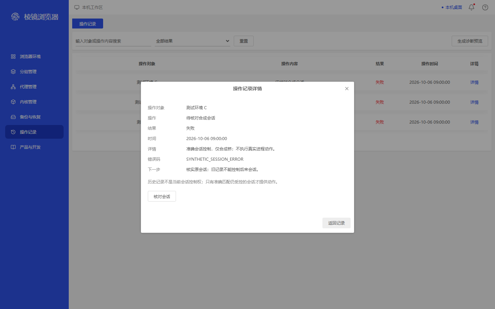
89f2c5405e1842fe277336d913a7a0d9e8b790419ef1886cfd174eba19d6a6a5
native-activity-session-pending · 1440×900
MAPPED — 仅映射proxy-edit详情容器，非同名原在途会话。620×440、x410/y238，实际App核对按钮禁用，正文/警示和footer y620/h58完整。由原处理器产生准确当前会话请求，在已支持合成Runtime.Reconcile派发前挂起；截图时派发0，保存记录断言随后释放同一请求并移除核对入口，非真实进程调用。
同类原容器：proxy-edit；本机状态适配不冒称同名原执行。
686f8218afa2d23bbb6afb6133643a3451ef111ee34d6fd7f53b1030ea681b12
native-activity-session-force-confirm · 1440×900
FAIL — V36-EXTRA-FORCE-OWNER：最高124层400×217、x520/y349.5，单0.4遮罩、焦点在确认内、取消/危险确认及准确环境/会话标识完整，仅映射group-delete-confirm容器。但下层122详情同时被记录为aria-modal=true且inert=false，没有满足嵌套低层屏蔽合同，不能用单遮罩宣称所有权通过。未实测键盘穿透；未派发强制结束。
同类原容器：group-delete-confirm；本机状态适配不冒称同名原执行。

dc339a6537ed5b27ae01194aee26f7382d714a00d47b9f7f3566fb9ce2dd465c
demo-restore-dense-bottom · 1280×800
MAPPED — 仅映射proxy-bound列表容器，没有同名原演示恢复底部图。1040×592、x120/y112，正文494/494/0、表体230/756/526均到底；第12项及原seed保留/凭据重填完整可见，footer y646/h58的取消/下一步未遮末行。保留演示JSON非完整本机恢复说明，未提交恢复。
同类原容器：proxy-bound；本机状态适配不冒称同名原执行。
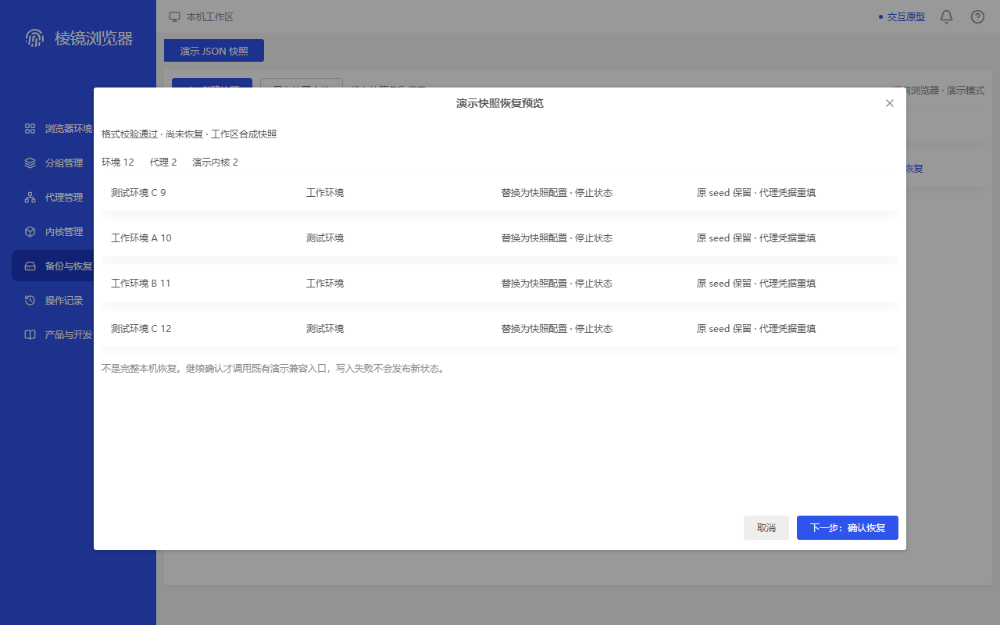
528342378dadb24320aafc9c822df9c2863e33b12d15fe33c9d677fe27684c44
native-restore-dense-top · 1280×800
MAPPED — 仅映射proxy-bound容器，非原26项预检。1040×592、x120/y112，第一页25项，截图呈现前3项；表体230/1510/0、正文494/514/0，不能当末项或正文到底证据。新增25/覆盖1、1–25/26及身份保护可读；footer y646/h58可达，正文尚有20px滚动余量，未提交恢复。
同类原容器：proxy-bound；本机状态适配不冒称同名原执行。

c066e94d85b1587ac05ef4b2eea85848433564c6e18292a41312227613db798e
native-restore-dense-bottom · 1280×800
MAPPED — 仅映射proxy-bound容器。1040×592、x120/y112，表体230/1510/1280、正文494/514/20均滚底差0；第一页第25项及有效期/提交前重验说明完整可见，仍为1–25/26，不能代替第26项。固定footer y646/h58无覆盖末行，顶部包说明随正文滚动出现边缘裁切属于底部位置，未提交恢复。
同类原容器：proxy-bound；本机状态适配不冒称同名原执行。

875d95aefe709e6b6c2401a9a90fe2ca523fda6029a8023e394d8d8d9377532e
native-restore-dense-page-two · 1280×800
MAPPED — 仅映射proxy-bound容器，没有同名原预检第二页。1040×592、x120/y112，服务读取offset0/25；第二页只有合成恢复环境26，标示26–26/26，上页可用/下页禁用。表体118/118/0、正文494/494/0；身份/包摘要和footer y646/h58完整，真实恢复未提交。
同类原容器：proxy-bound；本机状态适配不冒称同名原执行。

f27511362172c6c76eda48d35186961216800b9b3bea92485cac994b64c3110d
native-restore-dense-page-error · 1280×800
MAPPED — 仅映射proxy-bound容器，无同名原读取失败图。第二页读取失败后显示错误占位行而非第26项；STORAGE_READ_FAILED与重新读取影响清单可见。1040×592、x120/y112，正文494/494/0，footer y646/h58的下一步禁用、丢弃可见；保留原输入/不提交恢复，未实际点击重读。
同类原容器：proxy-bound；本机状态适配不冒称同名原执行。

acd9139b0df24e3048024c35787d28d583c6611666785600486dc67c91726045
native-diagnostics-minimal-bottom · 1280×800
MAPPED — 仅映射proxy-edit的620px详情容器，无同名原最小诊断。620×580、x330/y118，正文482/516/34确实到底；最小报告/启动读取错误及最后有效期说明可见。顶部排除说明随内部滚动部分离开视区，footer y640/h58的返回/保存完整；122层单0.4遮罩，未保存真实文件。
同类原容器：proxy-edit；本机状态适配不冒称同名原执行。
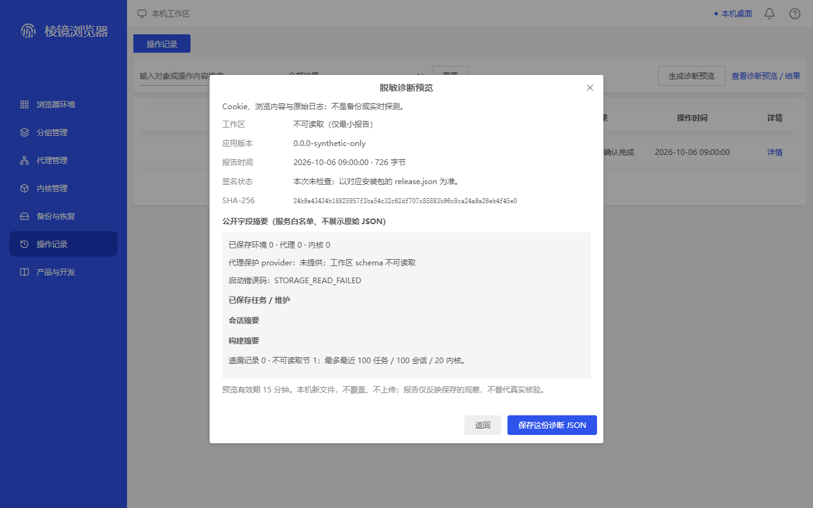
b7ba336ca50509c663370de30ef05a84448bb2b3b394302a63b84027776f2a94
workspace-fault-diagnostic-bottom · 1280×800
MAPPED — 仅映射proxy-edit的620px详情容器，无同名原故障诊断。620×580、x330/y118，正文482/488/6滚底差0，最后说明真实可见；footer y640/h58的返回/保存与关闭可达。低层blocker160为inert/透明遮罩，最高162唯一0.4遮罩，未执行真实诊断或文件保存。
同类原容器：proxy-edit；本机状态适配不冒称同名原执行。
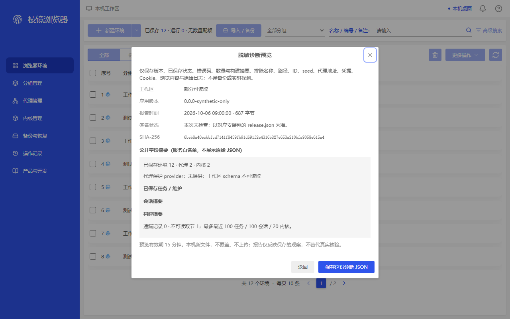
74b5d48959b6d9ca85d5665efcf28a4d6777bf5ef343b7b1c9ccf420eaec4af7
workspace-cookie-fault-diagnostic-bottom · 1280×800
MAPPED — 仅映射proxy-edit详情容器，无同名原Cookie嵌套诊断。最高620×580、x330/y118，正文482/488/6到底、footer y640/h58完整；Cookie80/blocker160均inert且透明mask，162唯一0.4遮罩。下层输入仍遮蔽，脚本记录原合成输入保留；通知y40/h48未遮诊断，未写Cookie或保存文件。
同类原容器：proxy-edit；本机状态适配不冒称同名原执行。

6ab167a690a89623166d222830c81d8cce043602ecc3a94121210a795a3a6b42
native-activity-session-old · 1280×800
MAPPED — 仅映射proxy-edit的620px详情容器，无同名原旧会话详情。620×440、x330/y188，正文342/342/0，旧会话不能控制后来会话警示完整；没有核对/强制结束入口，footer y570/h58仅返回记录，关闭可见。截图前核对和强制派发均0，不证明真实进程验收。
同类原容器：proxy-edit；本机状态适配不冒称同名原执行。
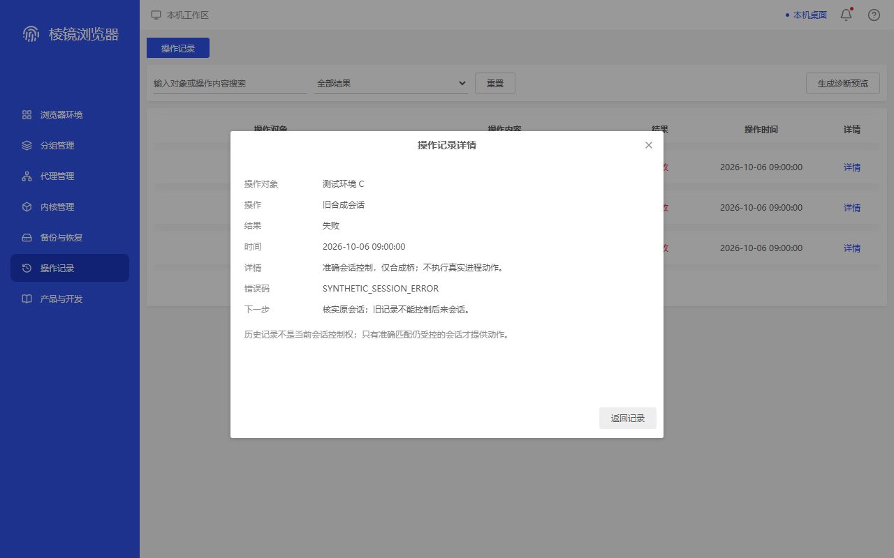
d694111b032987bc3857eabb81c14c535aede4c05ec06964f6a083814fc8ba7b
native-activity-session-reconcile · 1280×800
MAPPED — 仅映射proxy-edit详情容器，非同名原待核对会话。620×440、x330/y188，正文342/342/0，准确匹配原会话才可控制的警示与可用核对按钮可见；footer y570/h58返回及关闭无遮挡，没有强制入口。未点击核对，截图时Runtime.Reconcile/ForceStop派发均0。
同类原容器：proxy-edit；本机状态适配不冒称同名原执行。

8b84cbec7613d992b14f8bba6a82ea96400a27e7391927f9d4648ac07dc4bcb5
native-activity-session-pending · 1280×800
MAPPED — 仅映射proxy-edit详情容器，非同名原在途会话。620×440、x330/y188，实际App核对按钮禁用，正文/警示和footer y570/h58完整。由原处理器产生准确当前会话请求，在已支持合成Runtime.Reconcile派发前挂起；截图时派发0，保存记录断言随后释放同一请求并移除核对入口，非真实进程调用。
同类原容器：proxy-edit；本机状态适配不冒称同名原执行。
8ad59623e0f9b32e40a9779308645bdea6960e7c399bfecb1b3ded78f100bbc7
native-activity-session-force-confirm · 1280×800
FAIL — V36-EXTRA-FORCE-OWNER：最高124层400×217、x440/y299.5，单0.4遮罩、焦点在确认内、取消/危险确认及准确环境/会话标识完整，仅映射group-delete-confirm容器。但下层122详情同时被记录为aria-modal=true且inert=false，没有满足嵌套低层屏蔽合同，不能用单遮罩宣称所有权通过。未实测键盘穿透；未派发强制结束。
同类原容器：group-delete-confirm；本机状态适配不冒称同名原执行。
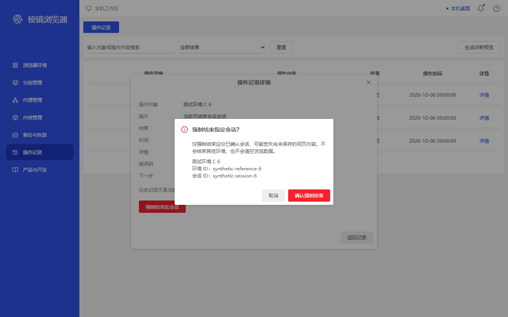
3b3e32659c15ff5b374507025f7c3afe845ae01f003c8cbdcd7a0d7127b7e858